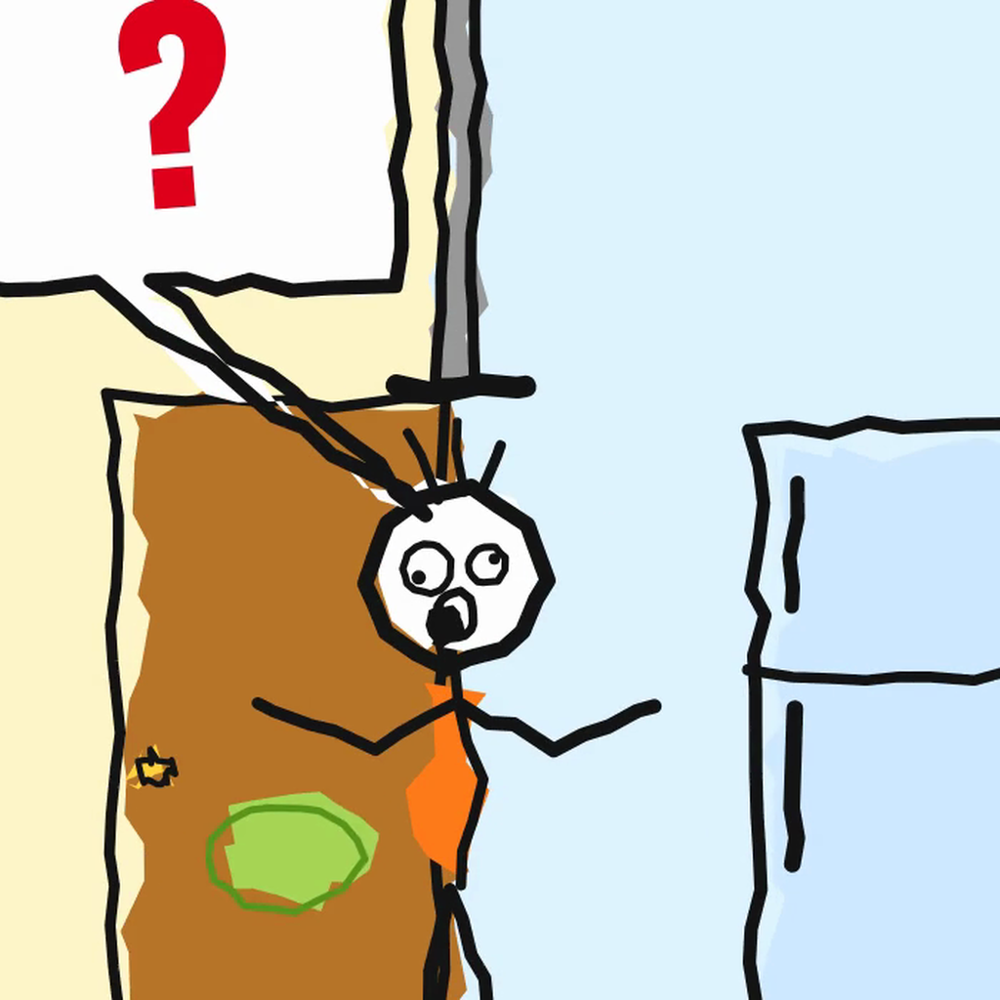

Chopovaibu
Short, playful animated videos that explain how the mind and brain work — with checked facts. «Чё по вайбу?»
We publish our own videos on Instagram and TikTok with a small internal publishing tool.
© 2026 Chopovaibu
Short, playful animated videos that explain how the mind and brain work — with checked facts. «Чё по вайбу?»
We publish our own videos on Instagram and TikTok with a small internal publishing tool.
© 2026 Chopovaibu